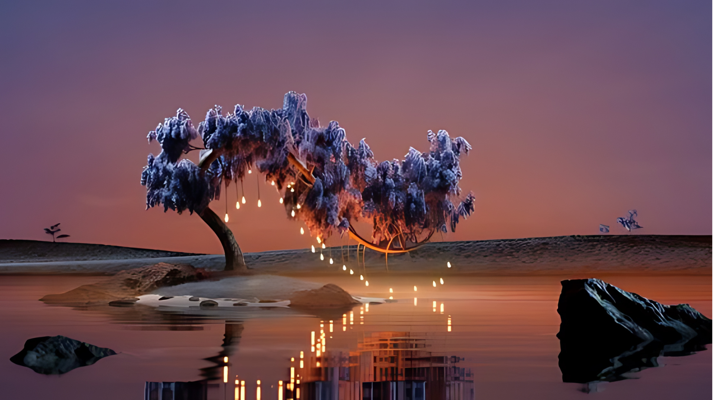

¿Quien Soy?
Hola, mi nombre es Catherine Milagros Felipa Herrera, tengo 24 años y me puedes llamar Cath, Cathy o Catherine, estudio la carrera de Arquitectura de Interiores en Toulouse Lautrec. Trabajo como Freelancer por redes sociaes y en eventos.
Conociendo un poco sobre mí, me apasiona el mundo del arte y el diseño debido a su capacidad para transmitir emociones y significados profundos a través de la creatividad. Uno de mis deportes favoritos es la natación, una actividad que practico desde pequeña y que me llevó a formar parte de la selección de un club. Entrenar diariamente y participar en competencias me permitió ganar algunas medallas, proporcionándome una experiencia invaluable en disciplina, dedicación y logro personal. Esta combinación de intereses y experiencias ha contribuido significativamente a mi desarrollo personal y profesional.
Este camino del arte y del diseño comenzo hace varios años cuando mi pequeña yo quedo facinada no solo con el arte o con el poder de expresion que tiene un dibujo o una pintura sino tambien con como un lugar puede transformar o impactar tanto nuestras vidas. Alguna vez me detuve a pensar el poder que tiene un espacio sobre nosotros; no me refiero solo a la belleza o la funcionalidad, sino a su capacidad para influir en lo más profundo de nuestro ser.Cada rincón, cada detalle, tiene el potencial de despertar emociones, recuerdos y pensamientos. Ya sea un paisaje natural que nos llene de paz y serenidad, o una ciudad bulliciosa que nos inspire energía y creatividad, lo cierto es que nuestro entorno tiene una influencia poderosa en nuestro estado de ánimo y en nuestra forma de percibir el mundo que nos rodea.
 La vida para mi es como un paisaje en constante transformación similar a una escultura que se va moldeando cada momento con cada decisión, con cada experiencia y con cada desafio. Constantemente me siento inspirada por la naturaleza y su transparencia en como la forma de cada elemento natural interactúa sin esfuerzo con los demás, reflejando asi una armonía y un equilibrio que busco replicar en mi vida y en mi trabajo. En este viaje encuentro una gran inspiración en las visiones creativas de artistas como Chantal Matar, quien tiene un enfoque contemporáneo y habilidad para fusionar arte y diseño me enseñan la importancia de la innovación y la expresión personal en cada proyecto. Asimismo, admiro a Zaha Hadid por su audacia y su perspectiva visionaria, que me inspira a desafiar los límites del diseño y a explorar nuevas formas de integrar la belleza y la funcionalidad. Además, el trabajo de Sergio Mora Diaz me impacta por su sensibilidad y su capacidad para crear ambientes emocionales a través del diseño, el como logra la conexión entre las personas y los espacios, recordándome la importancia de siempre considerar cada detalle.
 Como diseñadora de interiores, veo cada espacio como una oportunidad para contar una historia,
la historia de quienes lo habitan. Es un proceso de dar forma a los sueños y aspiraciones de las personas,
transformando espacios no solo para que sean estéticamente atractivos, sino para que reflejen la esencia de quienes
los viven. Pienso que al diseñar un lugar como un hogar o un espacio de trabajo, no solo se estan colocando muebles
y eligiendo colores; estamos creando un escenario para la vida, un escenario donde las emociones pueden fluir libremente
y donde los sueños pueden tomar forma. Creo que en general va mas alla de la estética; se trata de crear espacios que
inspiren y reflejen la escencia de quienes lo habitan. Cada espacio diseñado es como un santuario auténtico de vida,
donde cada detalle contribuye a una historia más profunda y significativa para todos los que lo experimentan.
Como diseñadora de interiores, veo cada espacio como una oportunidad para contar una historia,
la historia de quienes lo habitan. Es un proceso de dar forma a los sueños y aspiraciones de las personas,
transformando espacios no solo para que sean estéticamente atractivos, sino para que reflejen la esencia de quienes
los viven. Pienso que al diseñar un lugar como un hogar o un espacio de trabajo, no solo se estan colocando muebles
y eligiendo colores; estamos creando un escenario para la vida, un escenario donde las emociones pueden fluir libremente
y donde los sueños pueden tomar forma. Creo que en general va mas alla de la estética; se trata de crear espacios que
inspiren y reflejen la escencia de quienes lo habitan. Cada espacio diseñado es como un santuario auténtico de vida,
donde cada detalle contribuye a una historia más profunda y significativa para todos los que lo experimentan.